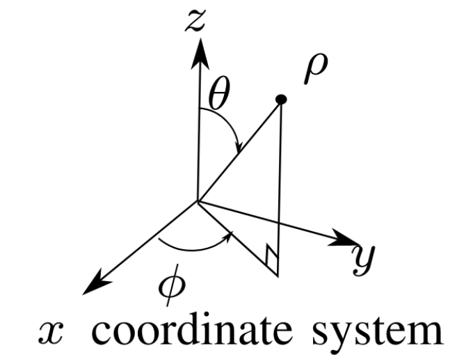

This section details the data collection parameters. Our dataset comprises 7 modalities captured within the CARLA simulator. The primary sensor suite includes LiDAR, RGB cameras, depth cameras, radar, and IMU. Additionally, we provide GPS and ground-truth bounding box data for advanced tasks. The wireless channel modality is characterized by multi-path properties, including complex channel gains, path delays, Angles of Departure (AoD), and Angles of Arrival (AoA).
Multimodal-Wireless
|
|-- Town03
| |
| `-- Town03_CBDcrossroad_seed42
| |
| |-- cav_1
| | |-- 000001.yaml
| | |-- 000001.pcd
| | |-- 000001_paths.npy
| | |-- 000001_camera0.png
| | |-- 000001_camera1.png
| | |-- 000001_camera2.png
| | `-- 000001_camera3.png
| |
| |-- cav_2
| | `-- ...
| |
| `-- rsu_1
| |-- 000001.yaml
| |-- 000001.pcd
| `-- ...
|
|-- Town05
| `-- Town05_... (Same structure)
|
`-- Town10
`-- Town10_... (Same structure)
The dataset is organized by simulation towns, scenarios, and participating agents (CAVs and RSUs). All collected modalities are synchronized and aligned by a six-digit frame number.
.pcd files..png files..yaml):
_paths.npy contain V2I channel data, representing the downlink from the RSU (transmitter) to the CAV (receiver)..pcd files..png files..yaml):
.json files.RGB camera640×480110120 m642-25RGB camera640×480110Depth camera640480110120 m642-2511030100The baseband complex gain \(a\) is of dimension [batch_size, num_rx, num_rx_ant, num_tx, num_tx_ant, num_paths, num_time_steps]. In our case we have no batch and 1 tx to 1 rx, which produces [1, 1, \(N_{\mathrm{r}}\), 1, \(N_{\mathrm{r}}\), \(M\), 1]
The multipath delay \(\tau\) is of dimension [batch_size, num_rx, num_tx, num_paths]. In our case we have the dimension to be [1, 1, 1, \(M\)]
The four angles have the dimension of [1, 1, 1, \(M\)] as well. From the communication perspective, the angles are computed within a local coordinate system of the planar arrays, which is defined as the figure:

Notably, in Sionna, the planar arrays are defined in y-z plane.
The orignal angle data generated by Sionna when computing the paths. The data of dimension [1, 1, 1, \(M\)] is defined the same way as the figure, but in the GCS.